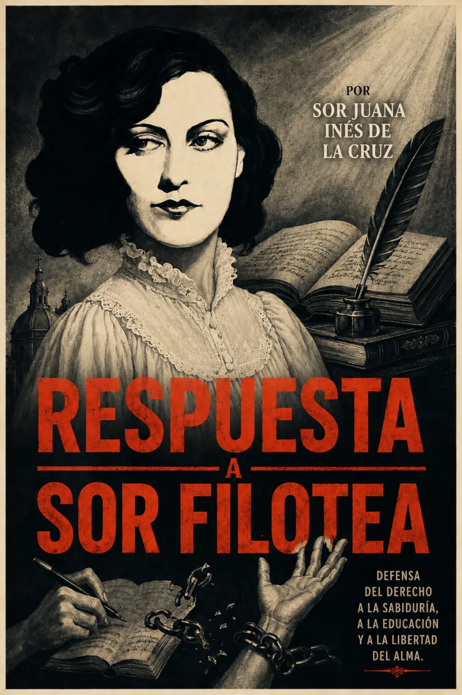

La memoria como defensa
Fechada el 1 de marzo de 1691, esta carta responde a las observaciones del obispo de Puebla, Manuel Fernández de Santa Cruz, quien había escrito bajo el nombre de Sor Filotea. Tras la polémica de la Carta atenagórica, Sor Juana convierte el relato de su formación en una defensa de su vida intelectual.
Contar cómo se aprende es también explicar por qué no se puede dejar de aprender.
La curiosidad de la infancia, el estudio y los obstáculos al conocimiento articulan una argumentación que une experiencia personal y autoridades religiosas. La cortesía epistolar convive con una firme reivindicación del saber de las mujeres: conviene escuchar tanto lo que afirma como la forma cuidadosa en que lo hace.
Fecha y destinatario: UNAM, Sor Juana ante la muerte, documentación. Texto de referencia: Biblioteca Virtual Miguel de Cervantes, Obras escogidas. 1691 corresponde a la fecha de la carta. La cabecera es una interpretación artística, no un retrato histórico autenticado.
La lectura
Respuesta a Sor Filotea · Carta completa
Claves de escucha: memoria de la infancia, vocación de estudio, argumentos sobre la educación de las mujeres y relación con la autoridad. Son orientaciones de lectura, no capítulos originales.
Reseñas

Bueno